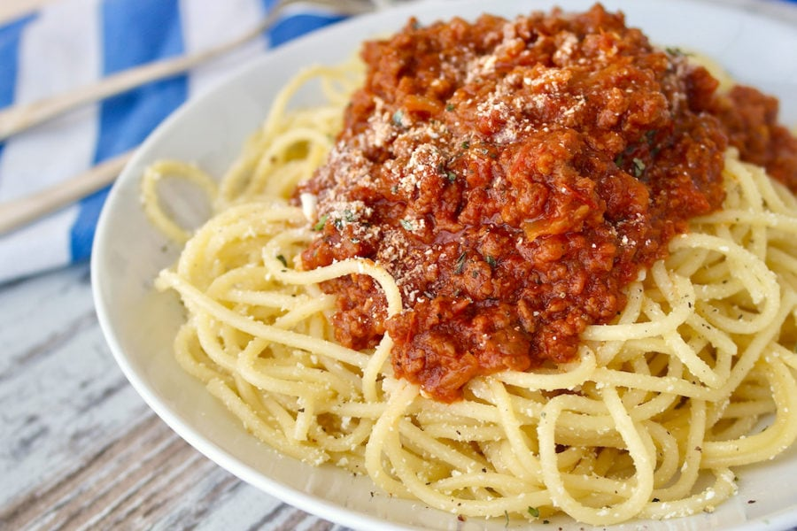

A great spaghetti for home aloner
Just a very basic dish of spaghetti with chopped up beef
Let's get started
Ingredients:
- Spaghetti. Preferebly large spaghetti
- Some chopped up beef
- Garlic, lots of
- Tomato and tomato sauce
- Onions
Steps:
- Boil water. Put your spaghetti in
- Chopped up all your beef if you haven't done that already
- Chop your garlic to very thin slice
- Chop your tamoto to very thin, small pieces
- Heat up your frying pan. After heated, put the cooking oil in and let it heat for 3mins
- Put your garlic in. Let it heated until yellow
- Put your tomato in. Stir and let heat in low to medium heat for about 10-15mins
- Put tomato sauce, soy sauce, sugar, seasoning, and a little bit of salt in
- If you don't feel like it smells good enough, put more garlice in
- After around 25mins, put your beef in
- Stir until the beef is cook, then take out your spaghetti and put your sauce on it
Voila!